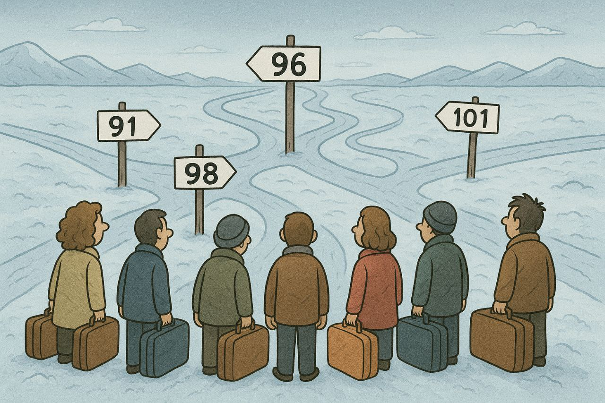

Contenidos Individuales
Entrevista
“Haha hemos sobrevivido a Rose... podemos con cualquier cosa”, dijo SpicyJo después de que LT publicase la Guerra de las Flores
MsLadyGrim¨Ok, mi primera declaración sería... Que Rose es un show. No podía parar de reírme con su pequeña historia¨, así comenzó el derecho a réplica de SpicyJo en relación a una entrevista exclusiva publicada por el Equipo Editorial titulada “La Guerra de las Flores”, donde Dark R0se, la primera expresidenta del Estado 89, habló sobre su experiencia y su versión de la historia respecto a las acusaciones en su contra.
Derecho a Réplica
Derecho a Réplica de Kyoubou a la noticia de la Guerra de las Flores
Kyoubou, cortesía
Estado 13
196, esos serán los espacios para migración
MsLadyGrimFaltando menos de una semana para terminar la temporada 4, la migración empezará para la transición a una quinta temporada. Los espacios para inmigrar a cada Estado estarán conformados por cuatro diferentes niveles.
Noticias
Fusión del Estado 1 al 24, ¿cómo quedará?
La ReiNaLos Estados del 1 al 24 se fusionarán a partir del 1 de septiembre, en un proceso que se desarrollará entre las 4:00 y las 10:00 horas del servidor (HS), según informó el equipo del juego mediante un comunicado enviado el 29 de agosto a las 15:00 HS.

Glosas Chismosas